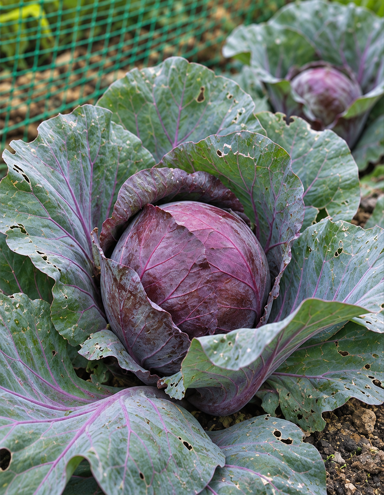
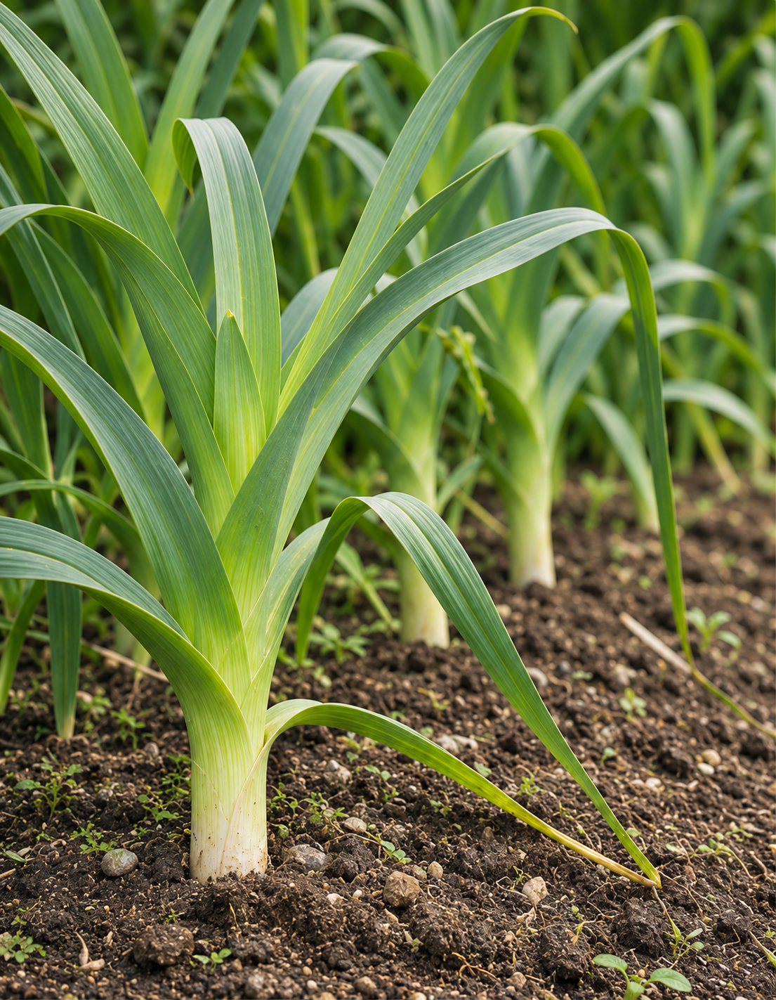

21A — Upper left / large stack

Vegetable
Guides
21B — Top / centred single line
Vegetable Guides
21C — Lower right / compact stack
Vegetable
Guides
9A — Upper left / large stack

Vegetable
Guides
9B — Top / centred single line
Vegetable Guides
9C — Lower right / compact stack
Vegetable
Guides